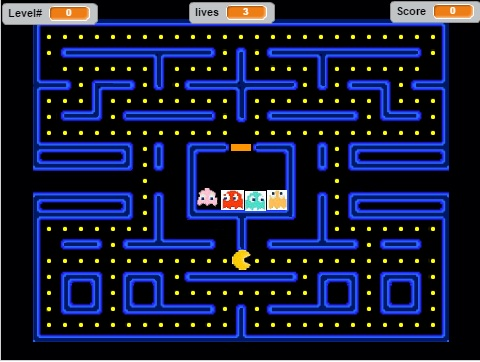

Final Content
Pacman
Description:
For my final project I used Scratch to recreate Pacman. There are four levels in the entire game. The player has three lives throughout the entire game. You need to catch all of the dots in every level before running out of lives in order to win. If the ghosts catch you three times before you gather all of the dots you lose. Every time you get more and more dots the score increases. As the levels go up the difficulty increases. As you beat each level there will be a different of the maze or the ghosts will go faster to try and catch you.